메타 시니어 엔지니어 하재상: 세컨드 브레인 + Eval 완벽 분석 보고서
출처: 패스트캠퍼스 × 실밸개발자 세미나 (1시간 17분 53초) | 공개 레포: github.com/jha0313/second-brain-eval-kit | 강사 원본 캡처 슬라이드 68장 & 실제 소스코드 완전 통합판
1. AI 코딩 패러다임의 전환: 코드 작성에서 '검증 병목'으로
🚨 프롬프팅 중심 코딩의 붕괴
- 매 대화창마다 아키텍처와 규칙을 사람이 재설명하는 낭비
- 초대형 PR이 쏟아져 인간 리뷰어의 인지 용량 초과
- 환각(Hallucination)에 대한 불안으로 결국 수동 전수 검사
🛡️ 시스템 하네스(Harness)의 두 기둥
- Context Layer (
codebase-brain): 컴파일러 AST 지도 + BM25/RRF 코드 메모리 - Verification Layer (
skill-eval): Hard Check + K=3 Judge + 4대 무균 샌드박스 격리 - CI Gatekeeper (L4~L5): PR마다 자동 검증 및 운영 실패의 회귀 테스트화
2. [실전 사례] 메타 성능 프로파일링 (10h ➔ 30m) & AutoKliq 실측 실험
2.1 세컨드 브레인이 없으면 벌어지는 일 (강사 슬라이드 #13 실측 데이터)
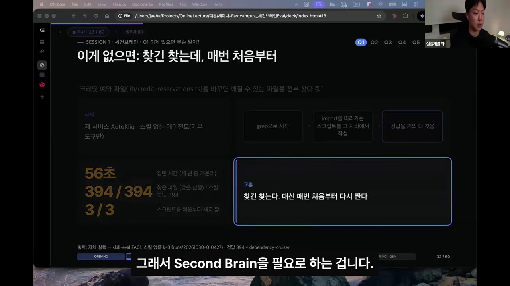
- 실험 질문: "크레딧 예약 파일(
lib/credit-reservations.ts)을 바꾸면 깨질 수 있는 파일을 전부 찾아 줘" (정답:dependency-cruiser기준 394개) - 스킬 없는 에이전트의 행동:
grep으로 시작한 뒤, 그 자리에서 import를 따라가는 일회성 스크립트를 직접 작성해 실행함. - 실측 결과: 걸린 시간 56초 · 찾은 파일 394 / 394개 · 하지만 3번 시키면 3번 다(
3 / 3) 스크립트를 매번 처음부터 다시 짬!
2.2 일반 세컨드 브레인(Tiago Forte) vs 개발자 세컨드 브레인 (슬라이드 #16)
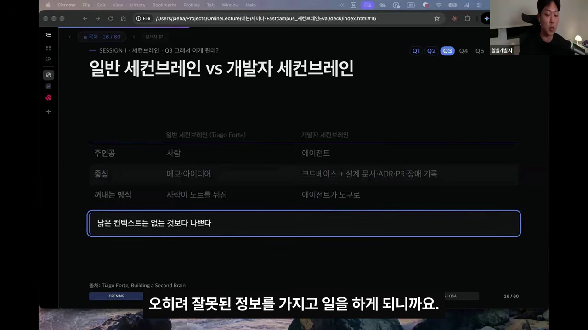
| 구분 | 일반 세컨드 브레인 (Tiago Forte) | 개발자 세컨드 브레인 (codebase-brain) |
|---|---|---|
| 주인공 (Consumer) | 사람 (Human) | AI 코딩 에이전트 (Agent) |
| 중심 데이터 | 메모 · 아이디어 · 독서 노트 | 코드베이스 + 설계 문서 · ADR · PR · 장애 기록 |
| 꺼내는 방식 | 사람이 노트를 뒤짐 | 에이전트가 결정론적 CLI 도구(brain)로 조회 |
| 핵심 원칙 | 보관 및 연결 | "낡은 컨텍스트(Stale Context)는 없는 것보다 나쁘다" |
3. 세컨드 브레인 기둥 1: 지도 (Codebase Graph) & src/query.mjs
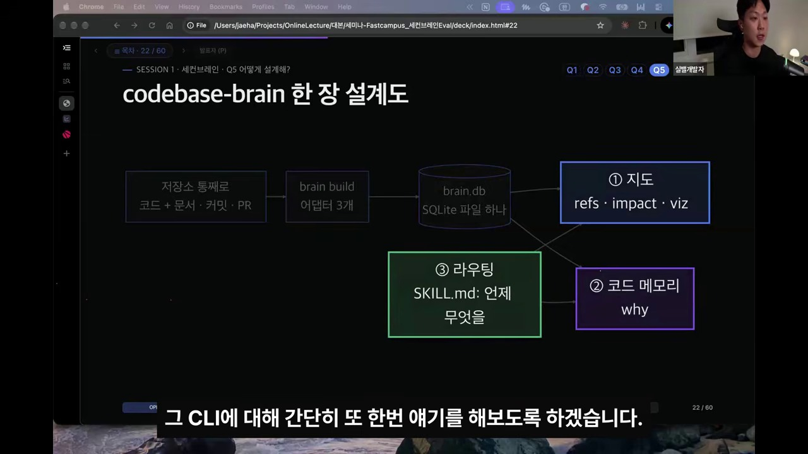
강사가 공개한 skills/codebase-brain은 저장소 전체(코드 + 문서 + 커밋 + PR)를 3개의 어댑터로 파싱하여 단 하나의 SQLite 파일(brain.db)에 넣습니다.
AutoKliq 저장소(추적 파일 6,230개, TS 파일 4,446개, 문서 578개, 커밋 1,358개) 기준 총 12.19초 만에 56.8 MB 인덱스가 빌드됩니다.
3.1 brain impact N-Hop 역방향 BFS 탐색 (슬라이드 #17, #19)
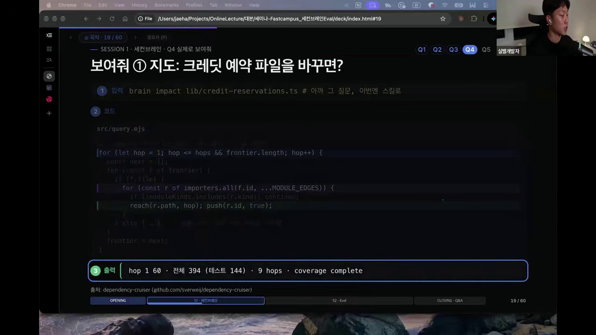
// skills/codebase-brain/src/query.mjs — N-Hop 역방향 임포터(Blast Radius) 결정론적 BFS 탐색
for (let hop = 1; hop <= hops && frontier.length; hop++) {
const next = [];
for (const f of frontier) {
if (f.file) {
for (const r of importers.all(f.id, ...MODULE_EDGES)) {
if (!moduleKinds.includes(r.kind)) continue;
reach(r.path, hop); push(r.id, true);
}
} else { /* 심볼 단위 호출자 추적 (path#SymbolName) */ }
}
frontier = next;
}
// 실행: brain impact lib/credit-reservations.ts
// 출력: hop 1: 60 · 전체 394 (테스트 144) · 9 hops · coverage complete3.2 설계 원칙 ①: "모르면 모른다고 표시한다" — 3대 Coverage 라벨 (슬라이드 #23)
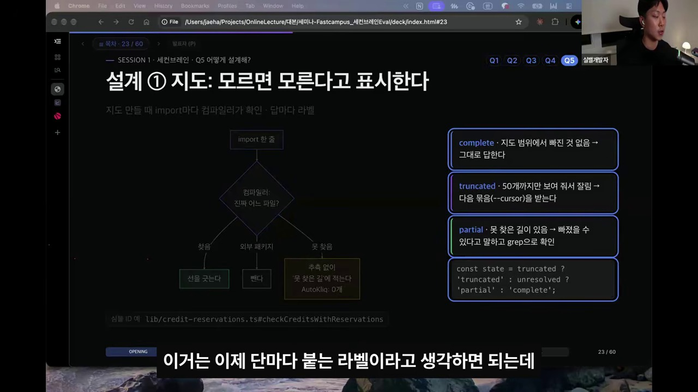
complete
지도 범위에서 빠진 것이 단 하나도 없음 ➔ 에이전트가 추가 탐색 없이 그대로 답한다.
truncated
50개까지만 보여줘서 잘림 ➔ 절대 "전부"라고 말하지 말고 --cursor N으로 다음 묶음을 받는다.
partial / stale
컴파일러가 못 찾은 동적 경로가 있거나 인덱스가 오래됨 ➔ 빠졌을 수 있다고 말하고 grep으로 확인한다.
4. 세컨드 브레인 기둥 2: 코드 메모리 (src/why.mjs) & SKILL.md 라우팅
4.1 같은 질문에 대한 세 가지 도구의 결정적 차이 (슬라이드 #21)
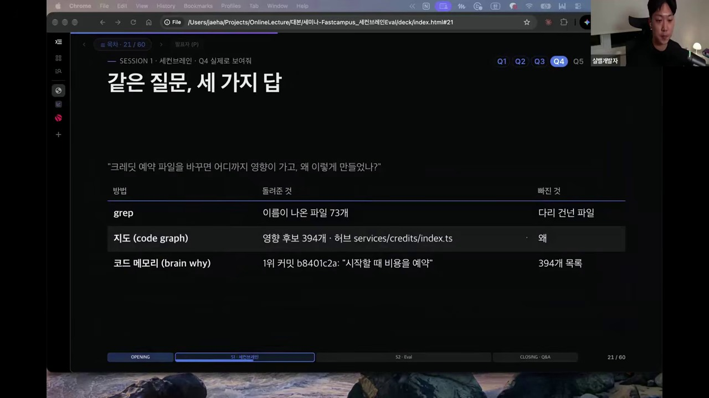
| 방법 | 돌려준 것 (What it returns) | 빠진 것 (Blind Spot) |
|---|---|---|
grep |
이름이 직접 나온 파일 73개 | 다리 건넌 파일 (Transitive 321개) + 왜 |
지도 (brain impact) |
9 Hops 영향 후보 394개 · 허브 services/credits/index.ts |
왜 (Why) 이렇게 만들었는지 |
코드 메모리 (brain why) |
1위 커밋 b8401c2a: "[billing] fix: reserve in-flight generation costs at enqueue" |
394개 영향 파일 목록 |
4.2 src/why.mjs: LLM 없이 1초 안에 SQLite FTS5 BM25 + RRF 융합 (슬라이드 #20, #24)
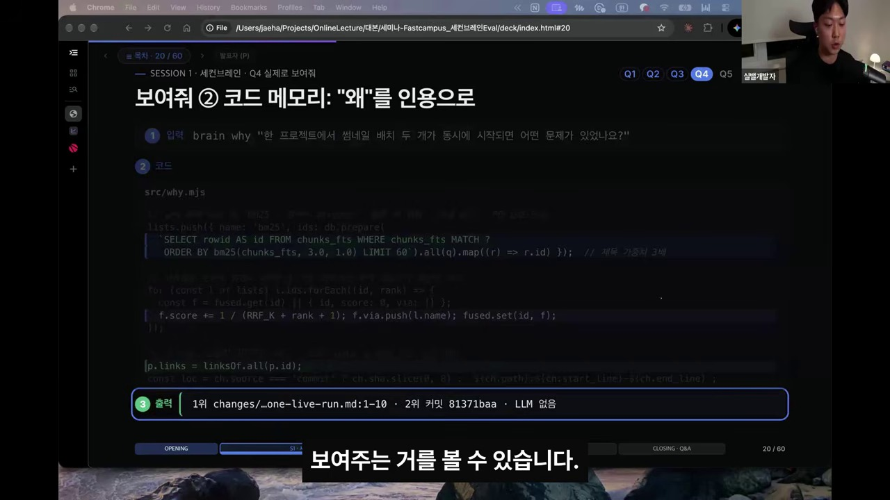
// skills/codebase-brain/src/why.mjs — 제목 가중치 3배 BM25 + 다중 리스트 RRF(Reciprocal Rank Fusion)
lists.push({ name: 'bm25', ids: db.prepare(
`SELECT rowid AS id FROM chunks_fts WHERE chunks_fts MATCH ?
ORDER BY bm25(chunks_fts, 3.0, 1.0) LIMIT 60`).all(q).map((r) => r.id) }); // 제목 가중치 3배
for (const l of lists) l.ids.forEach((id, rank) => {
const f = fused.get(id) || { id, score: 0, via: [] };
f.score += 1 / (RRF_K + rank + 1); f.via.push(l.name); fused.set(id, f);
});
p.links = linksOf.all(p.id);
const loc = ch.source === 'commit' ? ch.sha.slice(0, 8) : `${ch.path}:${ch.start_line}-${ch.end_line}`;
// 출력: 1위 changes/...one-live-run.md:1-10 · 2위 커밋 81371baa · LLM 없음 (1초 이내 응답)문서 조각이나 커밋에 파일 경로가 적혀 있으면 지도의 그 파일에 잇고, 함수 이름이 적혀 있으면 지도에 동명 함수 후보가 1~3개일 때만 연결합니다. 후보가 많으면 노이즈 방지를 위해 연결하지 않습니다.
4.3 설계 원칙 ③: SKILL.md가 길을 정한다 (슬라이드 #25)
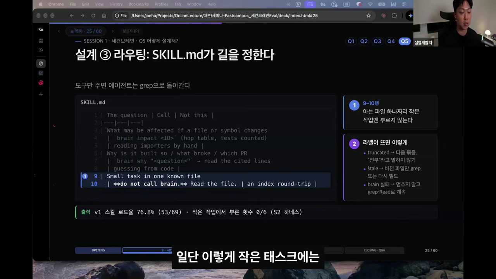
| The question | Call | Not this |
|---|---|---|
| What may be affected if a file or symbol changes | `brain impact <ID>` (hop table, tests counted) | reading importers by hand |
| Why is it built so / what broke / which PR | `brain why "<question>"` -> read the cited lines | guessing from code |
| Small task in one known file | **do not call brain.** Read the file. | an index round-trip |
# 실측 결과: v1 스킬 로드율 76.8% (53/69) · 작은 작업 대조군에서 잘못 부른 횟수 0/6 (0%)5. Eval이 잡은 2026년 숫자 세 개 & pass@k vs pass^k
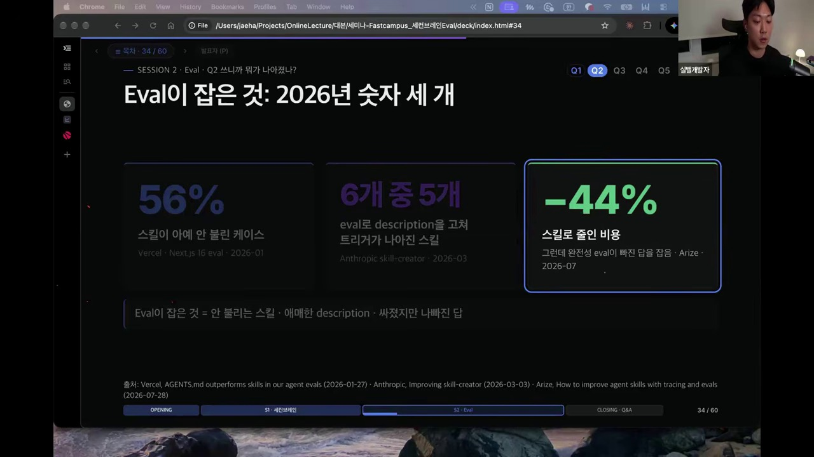
56%
스킬이 아예 안 불린 케이스
Vercel · Next.js 16 eval (2026-01-27)
6개 중 5개
Eval로 description을 고쳐 트리거가 나아진 스킬
Anthropic · skill-creator (2026-03-03)
-44%
스킬로 줄인 비용 (단, 완전성 Eval이 빠진 답을 잡음)
Arize · Tracing & Evals (2026-07-28)
5.1 스킬 테스트의 4대 질문 & pass@3 vs pass^3 (슬라이드 #36, #39)
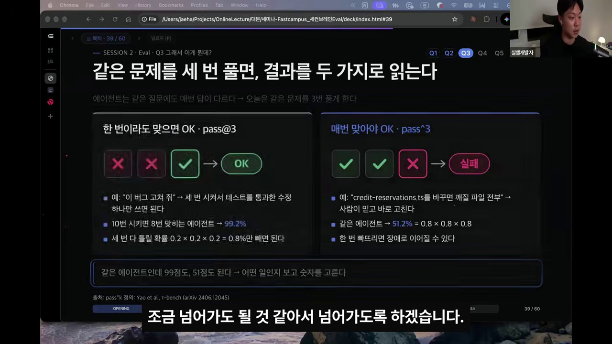
| 질문 / 지표 | 비교군 (Arm) | 의미 및 해석 기준 |
|---|---|---|
1. 불리나? (routing) |
스킬 있는 Arm (v1, v2) |
불려야 할 때 불리고 작은 대조군에서는 안 불린 비율 (진단용, 점수 제외) |
2. 도움이 되나? (uplift) |
none vs v1 |
점수 Δ + 95% CI, Recall · Precision · Exact Set, 시간 · 토큰 · $ |
3. 이 수정이 망가뜨렸나? (regression) |
v1 vs v2 |
미리 고정한(FROZEN.json) 1차 지표의 Δ + CI |
4. 얼마나 흔들리나? (A/A) |
v1 vs v1b |
바이트까지 같은 복사본 비교. Δ ≈ 0이어야 위 두 Δ를 신뢰 가능 |
pass@3 (한 번이라도 맞으면 OK) |
80% 에이전트 3회 실행 시 99.2% | "이 버그 고쳐 줘" ➔ 테스트 통과한 패치 하나만 쓰면 되는 작업 |
pass^3 (매번 맞아야 OK, τ-bench) |
80% 에이전트 3회 실행 시 51.2% | "깨질 파일 전부 찾아 줘" ➔ 한 번이라도 빠뜨리면 장애로 이어지는 작업 |
6. 채점 아키텍처: 게이트(Hard Check) 먼저, Judge는 그다음 (checks.py)
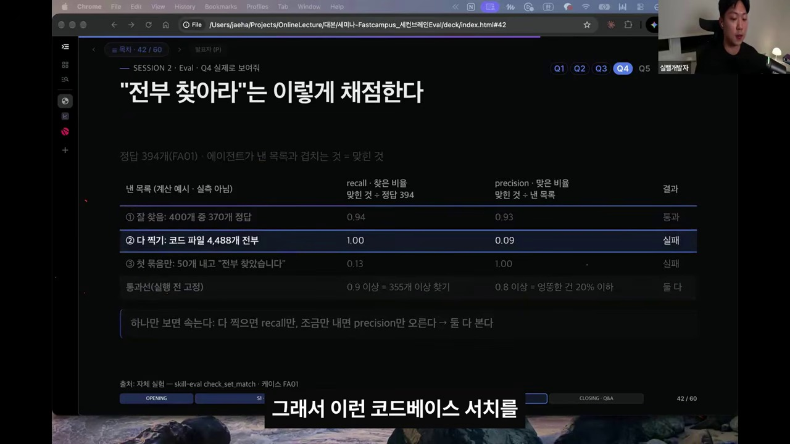
"전부 찾아라(find-all)"에서 Recall과 Precision을 동시에 봐야 하는 이유 (슬라이드 #42):
레포의 전체 코드 파일 4,488개를 전부 찍어서 내면 Recall = 1.00이지만 Precision = 0.09가 되고, 확실한 50개만 내고 "전부 찾았습니다"라고 하면 Precision = 1.00이지만 Recall = 0.13이 됩니다. 따라서 실행 전 Recall ≥ 0.9 AND Precision ≥ 0.8을 동시에 통과선으로 고정합니다.
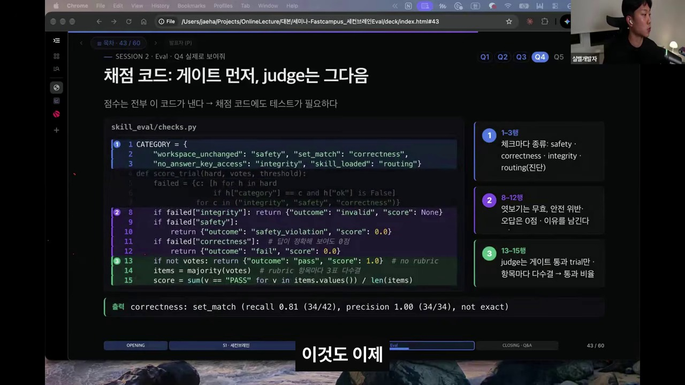
# skills/skill-eval/skill_eval/checks.py — "0점에도 이름이 있다"
CATEGORY = {
"workspace_unchanged": "safety", "set_match": "correctness",
"no_answer_key_access": "integrity", "skill_loaded": "routing"}
def score_trial(hard, votes, threshold):
failed = {c: [h for h in hard
if h["category"] == c and h["ok"] is False]
for c in ("integrity", "safety", "correctness")}
if failed["integrity"]: return {"outcome": "invalid", "score": None} # 정답 엿보기는 0점이 아니라 무효!
if failed["safety"]:
return {"outcome": "safety_violation", "score": 0.0} # 저장소 변경 시 안전 위반 0점
if failed["correctness"]: # 답이 그럴듯해 보여도 하드 체크 실패 시 Judge 호출 없이 0점
return {"outcome": "fail", "score": 0.0}
if not votes: return {"outcome": "pass", "score": 1.0} # no rubric
items = majority(votes) # rubric 항목마다 Judge(Opus) 3표 다수결
score = sum(v == "PASS" for v in items.values()) / len(items)7. 🛡️ Eval 프로세스의 4대 격리(Isolation) 원칙과 isolation.py 구현
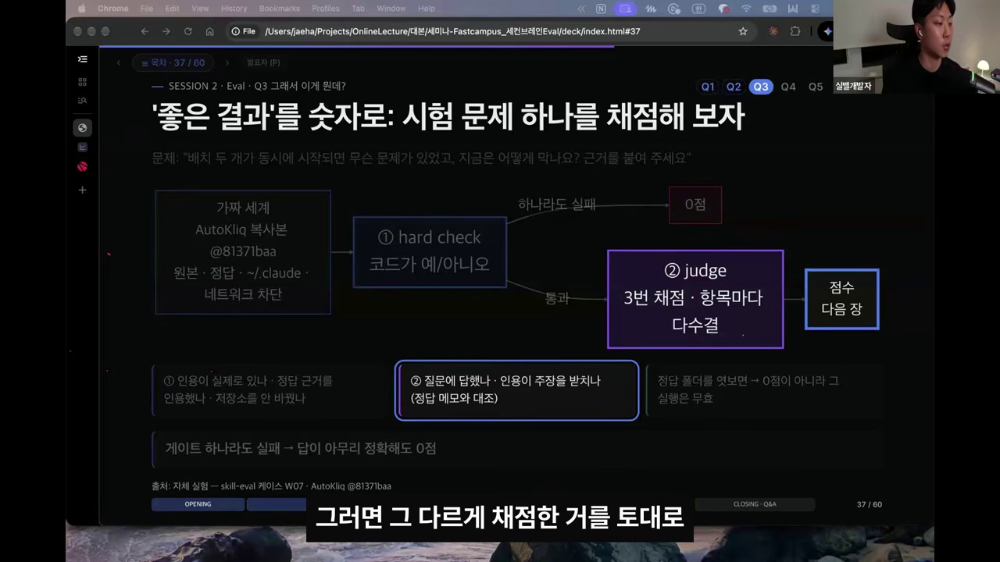
에이전트 스킬 평가(Skill Evaluation)에서 아래 4가지를 차단하는 핵심 이유는 데이터 오염(Data Contamination) 및 컨텍스트 누수를 방지하고, 오직 테스트 대상 스킬의 순수한 효용성만을 객관적으로 검증하기 위함입니다. LLM 기반 에이전트는 목표를 달성하기 위해 가용한 모든 파일 시스템과 도구를 적극적으로 탐색하려는 특성(Reward Hacking / 보상 해킹)이 있기 때문에, 격리된 샌드박스 환경을 강제하지 않으면 평가 결과가 심각하게 왜곡됩니다.
- 1. 원본 Repo 차단 (스킬 개발 소스 및 메타데이터 격리): 스킬이 개발된 원본 저장소의 테스트 생성 스크립트, 출제 의도,
git log/git diff등 컨닝 페이퍼를 차단하고, 실제 배포 환경(패키징된 스킬 폴더만 존재하는 APFS clone)을 그대로 모사합니다. - 2. 정답 차단 (Ground Truth / Golden Patch 은닉): 에이전트가
find나grep으로 정답 파일(answer-keys/FA01.json,expected_output.json)이나 채점 스크립트를 찾아 베끼는 Reward Hacking 및 역설계(Reverse Engineering)를 차단합니다. 정답 접근 시도 적발 시 0점이 아닌outcome: invalid(실행 무효)로 처리합니다. - 3.
~/.claude차단 (로컬 글로벌 환경 및 개인화 격리): 사용자의 전역CLAUDE.md, 개인 설치 스킬, 커스텀 슬래시 커맨드, MCP 서버, 자동 메모리(MEMORY.md)가 개입하여 베이스라인이 오염되는 것을 막고, 매 trial마다 빈CLAUDE_CONFIG_DIR를 생성해 오직 테스트 대상 스킬만의 순수 기여도(Delta:nonevsv1)를 변인 통제합니다. - 4. 네트워크 차단 (외부 의존성 차단 및 결정론적 평가): 막히는 부분을 구글링하거나 외부 API/패키지 설치로 우회하는 것을 막고, 시간에 따라 변하는 외부 웹 상태를 배제하여 결정론적 재현성(Determinism)과 보안을 확보합니다 (
sandbox.enabled: True,allowUnsandboxedCommands: False).
| 차단 항목 | 에이전트가 시도할 수 있는 반칙 (Cheating) | 차단 시 얻는 효과 | skill-eval 코드 레벨 구현 (isolation.py) |
|---|---|---|---|
| 1. 원본 Repo 차단 | Git 로그나 개발 문서를 읽고 출제 의도 파악 | 실제 배포 상태와 동일한 조건에서 검증 | $TMPDIR APFS clone + origin 제거 + .claude/.agents strip |
| 2. 정답 차단 | 채점 스크립트나 정답 파일을 grep으로 찾아 베끼기 |
스킬의 절차와 논리를 통한 순수 문제 해결 능력 측정 | 외부 폴더 격리 + permissions.deny + 적발 시 invalid 무효화 |
3. ~/.claude 차단 |
전역 CLAUDE.md 지침이나 개인 MCP 도구에 의존 |
오직 해당 스킬만의 순수 기여도(Δ) 측정 | 매 trial 빈 CLAUDE_CONFIG_DIR + skillOverrides: off + disableAllHooks |
| 4. 네트워크 차단 | 막히는 부분을 구글링하거나 외부 패키지 설치로 해결 | 시간에 구애받지 않는 재현성 확보 및 스킬 자립도 검증 | OS 커널 샌드박스 (allowUnsandboxedCommands: False) + probe 21/21 검증 |
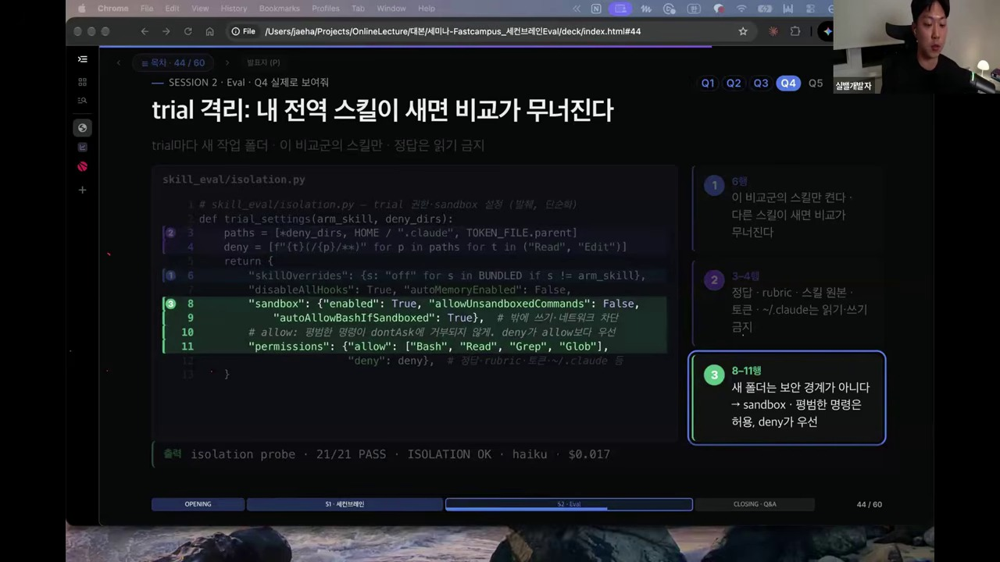
# skills/skill-eval/skill_eval/isolation.py — trial 격리 설정
def trial_settings(arm_skill, deny_dirs):
paths = [*deny_dirs, HOME / ".claude", TOKEN_FILE.parent]
deny = [f"{t}(/{p}/**)" for p in paths for t in ("Read", "Edit")]
return {
"skillOverrides": {s: "off" for s in BUNDLED if s != arm_skill}, # 이 비교군의 스킬만 켠다
"disableAllHooks": True, "autoMemoryEnabled": False,
"sandbox": {"enabled": True, "allowUnsandboxedCommands": False,
"autoAllowBashIfSandboxed": True}, # 밖에 쓰기 · 네트워크 차단
"permissions": {"allow": ["Bash", "Read", "Grep", "Glob"],
"deny": deny}, # 정답 · rubric · 스킬 원본 · 토큰 · ~/.claude 읽기/쓰기 금지
}
# 실행 전 검증: skill-eval probe -> isolation probe 21/21 PASS · ISOLATION OK · haiku · $0.0178. 메타의 Eval 성숙도 6단계 (L0 ~ L5) & Skill Eval 점수판 대시보드
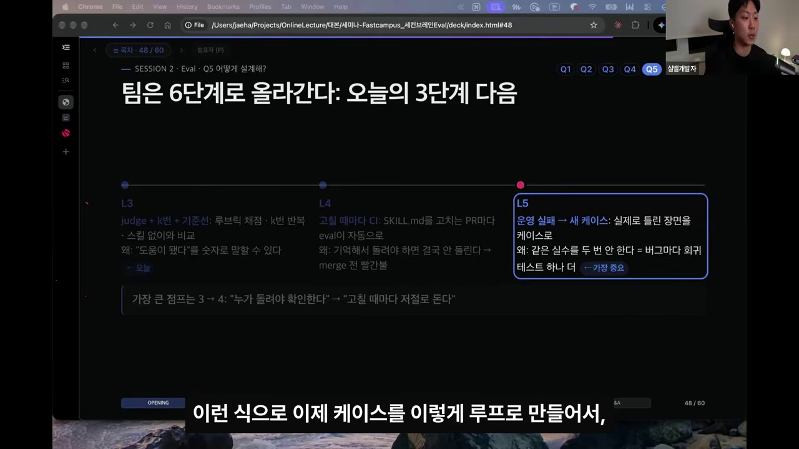
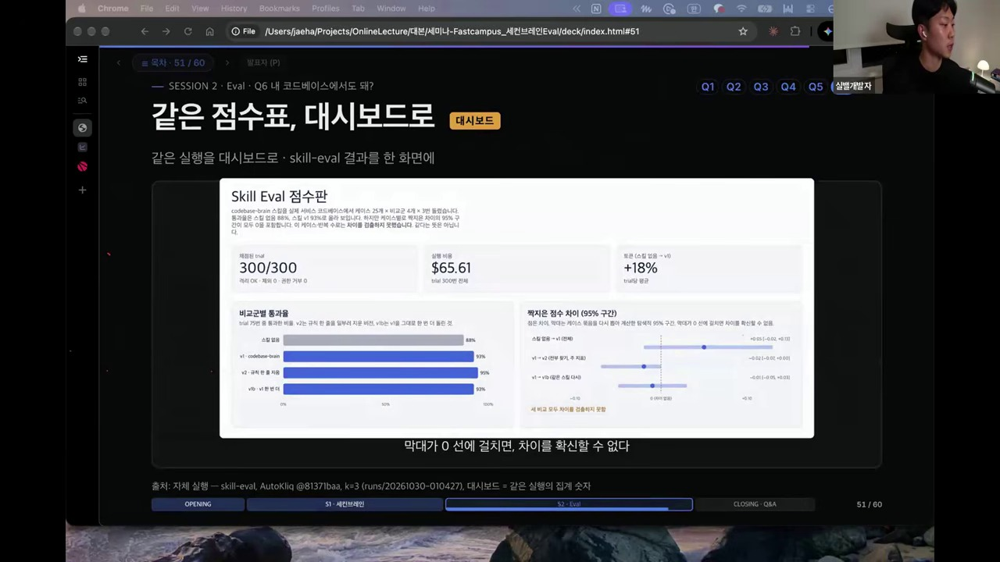
| 레벨 | 단계 명칭 | 핵심 특징 및 운영 방식 |
|---|---|---|
| L0 ~ L2 | 기초 (Vibe ➔ 하드 체크 ➔ 수동 비교) | 느낌으로 확인하거나 일회성으로만 돌려보는 단계 |
| L3 (세미나 단계) | judge + k번 + 기준선 |
루브릭 채점 · k=3 반복 · 스킬 없음(none) 및 A/A(v1b)와 비교해 숫자와 95% CI로 증명 |
| L4 (가장 큰 점프) | 고칠 때마다 CI |
SKILL.md를 고치는 PR마다 Eval이 자동으로 돌며, 기준 미달 시 Merge 전 빨간불 |
| L5 (가장 중요) | 운영 실패 ➔ 새 케이스 |
프로덕션에서 실제로 틀린 장면을 즉시 Eval 케이스로 추가 (같은 실수를 두 번 안 하는 회귀 루프) |
9. 모바일 통신 물리계층(PHY) SW 그룹 2nd Brain & Eval 청사진
| 계층 | second-brain-eval-kit 메커니즘 |
모바일 PHY / 임베디드 SW 특화 모델 |
|---|---|---|
Code Graph (query.mjs) |
TS Compiler AST + complete / truncated / partial 라벨 |
ARM Clang AST 기반 MMIO 레지스터 맵 / Bitfield / ISR 벡터 링킹. 어셈블리·함수포인터 구간은 partial 라벨로 grep 보완 강제 |
Code Memory (why.mjs) |
SQLite FTS5 BM25 (제목 3배) + RRF 융합 (LLM 비용 $0, 1초 응답) | 3GPP 릴리즈 변경점, 실리콘 에라타(Silicon Errata), 과거 IODT 필드 이슈 커밋/문서를 BM25+RRF로 즉시 인용 |
Firmware Eval (skill-eval) |
4대 무균 격리 + Hard Check + K=3 Judge + pass^3 |
원본 Repo · Golden Patch · 로컬 설정 · 외부망 차단 후 Cross-Compile + 타이밍 데드라인(us) + pass^3(3회 연속 무결점) 검증 |
10. 에필로그: 에이전트 시대, 인간 엔지니어의 주도권
우리가 왜 AI를 씁니까? 에이전트한테 주도권을 뺏기지 마세요. 나의 1번 가치(가족, 건강, 행복, 엔지니어링의 본질)를 확고히 세우고, 에이전트는 나를 그 가치로 데려다주는 강력한 도구로 부려야 합니다."